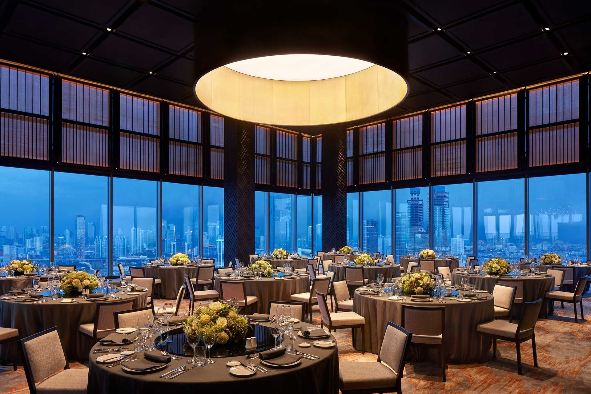
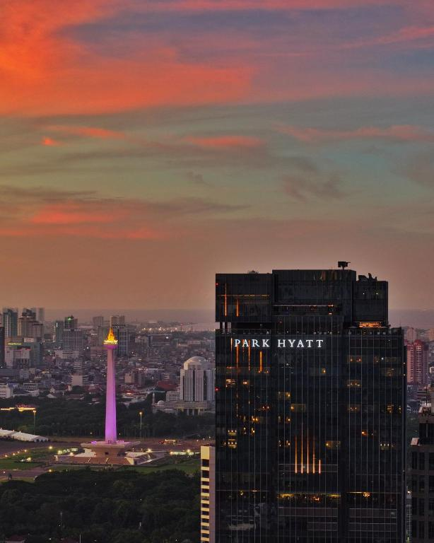

Discover. Meet. Connect. Explore.
A dedicated space for delegates to discover Jakarta, meet industry stakeholders, connect with potential partners, and explore production opportunities.
Explore JFC LoungeExperiences of Film Summit
20 - 22 October 2026 · Park Hyatt Jakarta
JFS extends beyond the main stage through curated spaces and activities designed for industry engagement.
Beyond the panels: a dedicated lounge to meet the industry, and an evening to celebrate the JFS community.

A dedicated space for delegates to discover Jakarta, meet industry stakeholders, connect with potential partners, and explore production opportunities.
Explore JFC LoungeA gathering of delegates, speakers, government representatives, investors, and industry leaders during JFS 2026.
Following the main JFS programme, delegates can explore selected Jakarta locations through curated scouting routes.
Explore selected locations across Jakarta through curated scouting routes designed for filmmakers and production professionals.
View the routes
A route covering Jakarta's cultural landmarks, historic areas, waterfront environments, and community spaces.
A route focused on Jakarta's contemporary architecture, commercial districts, creative spaces, and urban environments.
Join the Day 3 scouting routes and see the city's locations through a production lens.
Meetings and connections that turn conversations into collaboration.
Business matching creates opportunities for relevant participants to meet potential partners, investors, producers, institutions, and ecosystem players.
Discover Jakarta. Meet the industry. Explore opportunities.
Explore Jakarta's locations, production ecosystem, and opportunities for filmmakers and production companies.
Meet government representatives, industry professionals, production stakeholders, and ecosystem partners.
Build relevant professional and business connections during JFS.
Learn more about filming in Jakarta, production support, locations, and available opportunities.
Jakarta Film Summit 2026 will take place at Park Hyatt Jakarta, in the heart of Menteng.
Choose the way that suits your journey.
Venue access and parking information will be provided closer to the event.
Information on nearby public transport options and recommended routes.
Recommended airport transfer options for delegates travelling to Jakarta.
Operational details (parking capacity, travel time, shuttle, transport) will be published after confirmation from the venue/event team.
Join producers, investors, and filmmakers from across Southeast Asia at the Jakarta Film Summit 2026.
Sign Up Now